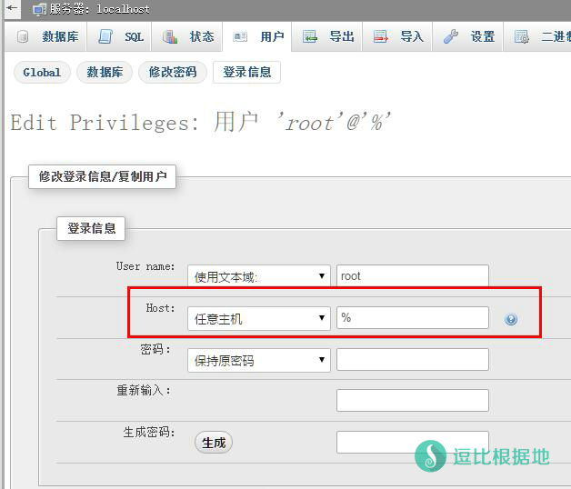

注:多用户版需配合ss-panel等前端使用，查看SS-Panel教程。
这篇文章主要说明ShadowsocksR后端的安装教程，这属于后端教程，前端教程请看这里，新手扩展篇请看这里！（教程都是配套的，建议放在一起看！）
如果你看不太懂，那么你需要看这个：SS-Panel 前后端详细演示安装 视频教程
此教程为多用户版，适合站长。如果你是个人使用，请查看单用户版教程：单用户版教程
以下命令均以root用户执行，或sudo方式执行。
以下部分内容可能需要VIM操作，不懂的可以看一下这个VIM小白教程。
本人将不再回复任何 SS Panel 问题，有问题请自行谷歌。
说明一下新手步骤，安装依赖 → 下载源码 → 修改数据库配置 → 设置脚本权限并运行脚本！
没了，就这么简单，不要想的那么复杂。
不会链接VPS的，你需要看着个：Linux SSH链接工具 Putty 新手详细使用教程
更多的Shadowsocks安装教程/一键脚本请看这里：Shadowsocks指导篇
ShadowsocksR单服务器用户：ShadowsocksR 多用户 mudbjson模式使用教程 支持流量限制
基本库安装
Centos系统执行这个：
yum update yum install git -y
Ubuntu/Debian系统执行这个（推荐这两个系统，对新手友好）：
apt-get update apt-get install git -y
如果要使用 salsa20 和 chacha20 加密方式，请安装 libsodium：
如果曾经安装过旧版本，亦可重复用以上步骤更新到最新版，仅1.0.4或以上版本支持chacha20-ietf
获取源代码
git clone -b manyuser https://github.com/ToyoDAdoubiBackup/shadowsocksr.git
执行完毕后此目录会新建一个shadowsocksr目录，其中根目录的是多用户版（即数据库版），子目录中的是单用户版。
子目录中的是单用户版(即 shadowsocksr/shadowsocks)。
以下是相对路径，比如你在 /root 目录下执行上面的代码，那你的SS根目录就是 /root/shadowsocksr 。
根目录即 shadowsocksr
子目录即 shadowsocksr/shadowsocks
安装依赖（cymysql）
cd shadowsocksr # 进入ShadowsocksR根目录 bash setup_cymysql.sh # 安装Cymysql 依赖 bash initcfg.sh # 初始化ShadowsocksR服务端
服务端配置
shadowsocksr 根目录内，打开文件vi usermysql.json：
"host": "127.0.0.1", //前端mysql域名/IP "port": 3306, //mysql端口 "user": "ss", //mysql用户名 "password": "pass", //mysql密码 "db": "shadowsocks", //数据库名
注意：这里的数据库信息除了 host ，其他的必须和SS-Panel完全一致，服务端启动的时候会读取数据库信息！至于 host ，如果你的服务端和前端（SS-Panel）在一个VPS上，那就写localhost或者127.0.0.1，如果不在一起，请写前端（SS-Panel）所在VPS的ip或者域名！ 还有一条要注意的，如果服务端和前端（SS-Panel）不在一个VPS上，那么数据库链接就属于远程链接了，这时候需要开启数据库用户的远程链接功能！ 开启方法：在数据库——用户——编辑权限——登录信息中修改Host为任意主机“%”

配置文件config.json：
# 一般情况下不需要编辑，除非你需要修改 加密方式/协议/混淆等参数。 vi user-config.json
注意：新版ShadowsocksR服务端的 默认加密方式从aes-256-cfb改为aes-128-ctr了，大家注意一下。
"method":"aes-128-ctr", //修改成您要的加密方式的名称 "protocol": "auth_aes128_md5", //修改成您要的协议插件名称 "obfs": "tls1.2_ticket_auth_compatible", //修改成您要的混淆插件名称
如果需要修改协议插件和混淆插件，请根据单用户版服务端页面的选项对照说明修改参数。
compatible 是兼容原版模式，原版也可以用，SSR开启插件也可以用！
注意：ShadowsocksR服务端 auth_aes128_* 及以后的所有协议不支持兼容原版，混淆依然支持，影响解释看着个。
id //用户id数据库字段说明:
email //用户邮箱 pass //用户密码 passwd //ss密码 t //最后使用的时间 u //已上传流量 d //已下载流量 transfer_enable //可用流量（总量） port //ss端口 switch //保留字段 enable //启用或禁用ss帐号（1启用，0禁用） type //保留字段 last_get_gift_time //保留字段 last_rest_pass_time //保留字段
ShadowsocksR多用户板服务端默认开启UDP的
服务端运行与停止
python server.py
这句运行代码主要用于调试，关闭ssh后ss后端自动关闭，所以正式使用请使用下面的脚本运行！如果需要停止请按Ctrl+C键终止程序。
这时可查看有运行情况，检查有没有错误。如果服务端没有错误，而连接不上，需要检查iptables或firewall(centos7)的防火墙配置
通过脚本运行
脚本位于 shadowsocksr 根目录，如果你没有在这个目录，请先进入根目录cd shadowsocksr
请分清楚，根目录 shadowsocksr 和子目录 shadowsocksr/shadowsocks ！
赋予脚本执行权限（执行一次就好）
chmod +x *.sh
后台运行 但不记录日志（ssh窗口关闭后也继续运行）
./run.sh
后台运行 且 记录日志（ssh窗口关闭后也继续运行）
./logrun.sh
查看 SS日志（用 logrun.sh 脚本启动才会打开日志）
./tail.sh
停止运行
./stop.sh
注：通过脚本运行默认日志会保存在根目录的ssserver.log，可手动查看。
如果日志文件太大，需要清理，可以用下面这个命令 清空 日志文件。
cat /dev/null > ssserver.log
端口限速和限制设备数
请查看这个文章：ShadowsocksR服务端 限制设备连接数 和 限制端口速度 的方法
更新源代码
如果代码有更新可用本命令更新代码
进入shadowsocksr目录
cd shadowsocksr
执行
git pull
成功后重启ss服务
开机启动
一些人可能需要开机启动，我就一起写上吧。
首先设置开机启动文件的权限，并打开该文件。
Centos系统：
chmod +x /etc/rc.d/rc.local vi /etc/rc.d/rc.local
Ubuntu/Debian系统：
chmod +x /etc/rc.local vi /etc/rc.local
然后在 exit 0 这一句代码（只有ubuntu/debian有这个 exit 0）的前面加上 下面这句代码(如果你的Shadowsocksr文件夹不在root目录下，请自行修改路径)。
是使用不记录日志的 run.sh 脚本还是记录日志的 logrun.sh 自己看着改。
bash /root/shadowsocksr/run.sh
然后按 ESC键 退出vi编辑模式，然后输入 :wq 保存并退出该文件，就完成了。
我以后不再写任何sspanel教程，也不再回复任何sspanel问题！
其它异常
无法连接Shadowsocks服务端，并且没提示错误或者提示IP被占用
如果Shadowsocks服务端没有提示错误，或者提示IP被占用，并且使用./stop.sh和./run.sh脚本重启后，依旧无法连接Shadowsocks，请重启当前VPS（这个问题我猜测可能是./stop脚本并不能完全关闭Shadowsocks所有连接，导致无法解决问题。正好Shadowsocks服务端默认随机启动，所以重启VPS可以解决这个问题。如果你知道原因或者其他更好的解决办法请在下面留言）。
Shadowsocksr无法连接到数据库！MYSQL：2003
经过我多次实验，发现这个问题都是出现在Shadowsocksr后端和数据库不在一个VPS上，这就说明了是数据库所在VPS的错误，先开放数据库的远程连接“%”，这个上面服务端配置里说的有方法。然后再打开你iptables防火墙配置文件（多半问题都是出现在这里，3306数据库端口没有对外开放）。
默认lnmp安装后，会封闭3306的端口，不允许外部链接，所以删掉这个规则重新添加开放规则就好了。
删掉原来的3306 DROP规则，然后加上开放3306端口规则。
iptables -D INPUT -p tcp --dport 3306 -j DROP iptables -A INPUT -p tcp --dport 3306 -j ACCEPT
服务端运行提示/日志正常，客户端填写也正确，但是依然无法连接！
这种情况一般都是防火墙搞的鬼（Debian/Ubuntu基本排除，多出现在Centos系统）。
iptables -L
看一下有没有什么东西阻止了ss端口，或者说是没有允许/开放ss的端口。
如果你看不明白，你可以先关闭防火墙，试一试是不是防火墙的问题导致的无法连接。
/etc/init.d/iptables stop
对了，部分VPS是没有吧iptables添加到服务里面，所以只能清空防火墙规则（也就是开放所有端口）
iptables -F
如果关闭后SS链接正常，那就是防火墙的问题，你可以随后慢慢排除防火墙规则。也可以直接 iptables -F 清空防火墙，但是我不建议这么做，一不小心就需要重装服务器了。
如果你的服务端python版本在2.6以下，那么必须更新python到2.6.x或2.7.x版本
如果运行一段时间后，你发现服务器无法连接，同时ssh连上去后，执行
netstat -ltnap | grep -c CLOSE_WAIT
显示的数值很大（超过50是严重不正常），那么请修改服务器的最大连接数，如果是ubuntu/centos均可修改
/etc/security/limits.conf
添加两行：
* soft nofile 32768 * hard nofile 131072
然后重启机器生效（详细的看这个Linux上的shadowsocks服务端优化方法）
如果还是出现大量的too many open files错误，可以通过执行以下命令确定占用大量文件数的进程：
lsof -n |awk '{print $2}'|sort|uniq -c |sort -nr|more
更多的Shadowsocks安装教程/一键脚本请看这里：Shadowsocks指导篇
转载自ShadowsocksR官方Github文档：https://github.com/breakwa11/shadowsocks-rss/wiki/Server-Setup(manyuser)
转载请超链接注明：逗比根据地 » ShadowsocksR 多用户版服务端安装教程（SS-Panel后端）
责任声明：本站一切资源仅用作交流学习，请勿用作商业或违法行为！如造成任何后果，本站概不负责！


另外，你贴出的错误信息简单的来说就是：头部验证失败，可能是密码错误、加密方式、协议错误、混淆错误、时间错误(验证)等。
我又单独写了一篇安装 libsodium 的文章。
假设你的ShadowsocksR服务端安装在
/root目录下。 因为crontab 环境变量很坑，所以你需要修改一下 run.sh 脚本的环境变量设置。 把第一行的文本（带 # 号） 改为（带 # 号） 然后按ESC键退出编辑模式并输入:wq保存并退出。做完这个还不行，你需要设置VPS的时区为 北京时区，否则定时任务会不准确。 然后输入
date，看一下VPS系统时间是否和北京时间差不多（可能会有几分钟误差，不用管）然后重启crontab，来让crontab读取系统当前的北京时区。 等于说就是 设置crontab定时任务+修改 run.sh 脚本环境变量+修改系统时区为北京时区+重启crontab以同步时区为北京时区
cat /var/run/shadowsocks.pid文件。